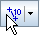
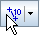
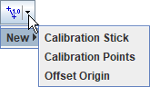
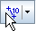
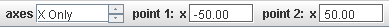
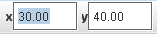

Par kalibracijskih točk
Sled para kalibracijskih točk je podobna sledi odmika izhodišča, vendar definira dve točki s fiksno dodeljenimi koordinatami sveta. Koordinate sveta so lahko sestavljene iz ene komponente x, komponente y ali obeh. Pri danem koordinatnem sistemu te koordinate v vsakem koraku določajo merilo, izhodišče in naklon. Pri vlečenju katerekoli od kalibracijskih točk v glavnem oknu se lastnosti koordinatnega sistema spreminjajo tako, da ostajajo dodeljene koordinate sveta nespremenjene. Kalibracijske točke predstavljajo najlažji način postavljanja lastnosti koordinatnega sveta, če imamo na video sličicah tve značilki z znanimi koordinatami sveta.
Opomba: Kalibracijske točke so zelo močno orodje. Priporočeno je, da se "igramo" z nekaj kalibracijskimi točkami ob tem, da so vidne osi koordinatnega sistema in kalibracijska palica. Tako lahko vidimo, kako skupaj krmilijo koordinatni sistem.
1. Prikaz kalibracijskih točk
Na kalibracijskem gumbu v orodni vrstici kliknemo na puščico in v seznamu kalibracijskih orodij izberemo Kalibracijske točke. Ko to izberemo, lahko kalibracijske točke prikažemo ali skrijemo s klikom na glavni del kalibracijskega gumba.

V začetku so kalibracijske točke postavljene rahlo spodaj na vsaki strani sredine video sličice. Točkama so dodeljene trenutne koordinatne sveta na njunih položajih na sliki. Komponente x in y obeh točk vidimo prikazane v orodni vrstici.

Za uporabo kalibracijskih točk lahko spreminjamo njihove koordinate sveta in jih premikamo na želeni položaj na sliki, tako kot je opisano spodaj.
2. Opcije osi

Izbira "Osi" določa, ali kalibracijski točki krmilita tako os x in y ali pa le eno od osi. Če izberemo le eno os (v našem primeru "Le os X"), premikanje kalibracijske točke vzdolž te osi spreminja merilo in premika izhodišče brez spreminjanja naklona. Premikanje kalibracijske točke pravokotno na izbrano os nima nobenega učinka. To je zelo uporabno, če ena os ni znana ali ni pomembna. Tak primer imamo pri študijih vertikalnega gibanja ali optični analizi spektra s pomočjo sledi profila črte.
3. Spreminjanje koordinat sveta kalibracijske točke

Koordinate sveta izbrane kalibracijske točke spremenimo tako, da v polji x in y v orodni vrstici vpišemo ustrezne vrednosti.
Opomba: Spreminjanje koordinat sveta spreminja merilo koordinatnega sistema, izhodiščein naklon tako, da ostanejo položaji oznak obeh točk na sliki nespremenjeni.
4. Premikanje kalibracijske točke
Izberemo in premikamo katerokoli od kalibracijskih točk na želen položaj v glavnem oknu z videom.
Opomba: Premikanje kalibracijske točke spreminja merilo koordinatnega sistema, njegovo izhodišče in naklon tako, da ostanejo koordinate sveta obeh točk in položaj neizbrane točke na sliki nespremenjeni.
5. Zaklepanje kalibracijskih točk
Zaklepanje sledi kalibracijskih točk preprečuje spreminjanje koordinatnega sistema. Kalibracijske točke zaklenemo tako, da vklopimo lastnost Zaklenjeno v menuju sledi.